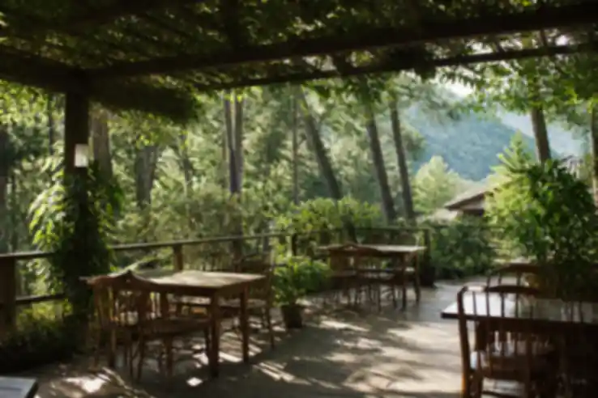
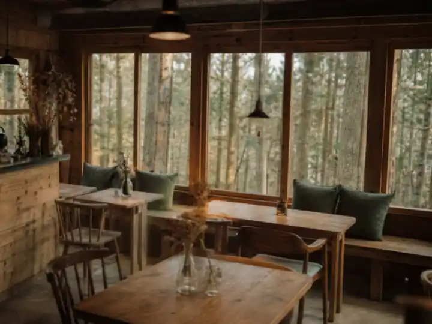
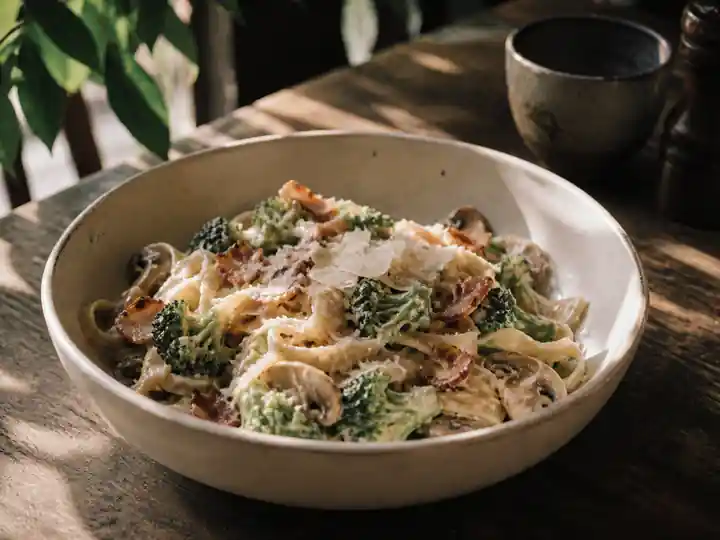
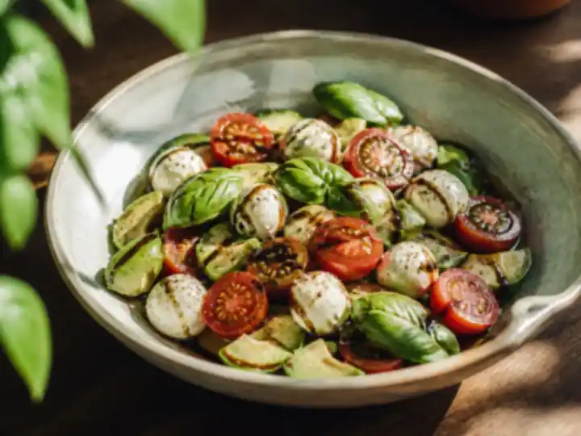

케어키즈존
아이와 함께 와도 자리를 넓게 쓸 수 있도록 구역을 나눠 두었습니다. 유모차를 두고 앉을 공간이 있고, 아이 메뉴는 매장에서 안내합니다.
송추역에서 조금 안쪽, 나무가 둘러싼 작은 식당입니다. 나무 테라스에 앉으면 계절이 먼저 보이고, 그다음에 그릇이 나옵니다. 아이와 강아지, 두 손 모두 데리고 오셔도 괜찮습니다.
4인 이상은 전화 또는 DM으로 예약받고 있습니다

01 — 공간

“사람이 많지 않은 길 안쪽, 집을 고쳐 만든 듯한 식당.”방문 후기에 자주 나오는 말
서광식당은 큰길에서 조금 들어온 곳에 있습니다. 앞마당에 차를 세우고 문을 열면, 통창 너머로 나무가 먼저 보입니다. 안쪽은 나무 테이블과 낮은 조명으로 조용하고, 바깥 테라스는 낮 햇살이 길게 들어옵니다.
브런치 한 접시에 커피 한 잔. 오래 앉아 있어도 눈치 주지 않는 곳으로 만들고 있습니다. 아이가 뛰어도, 강아지가 발밑에 누워도 괜찮은 자리를 따로 두었습니다.
단체 손님은 4인 이상부터 전화·DM으로 미리 예약을 받습니다. 자리가 좁아 당일에는 어려울 수 있습니다.
03 — 영업시간
평일은 오후 네 시에 닫습니다. 헛걸음하지 않도록 요일별 시간을 그대로 적었습니다.
4인 이상은 전화(031-826-4188) 또는 인스타그램 DM으로 미리 예약해 주세요. 4인 미만은 현장에서 안내드립니다.
매주 월요일 · 화요일, 명절 당일. 시즌에 따라 휴무가 바뀌는 경우가 있어 방문 전 전화 확인을 권합니다.
제로페이 사용 가능. 단체·행사 문의도 전화로 받습니다.
영업시간은 카카오맵 매장 정보(2026년 11월 23일 확인) 기준입니다. 이전 안내에는 월요일만 휴무로 적힌 곳도 있어, 방문 전 전화로 확인하시는 편이 안전합니다.
04 — 함께 오는 자리
아이와 함께 와도 자리를 넓게 쓸 수 있도록 구역을 나눠 두었습니다. 유모차를 두고 앉을 공간이 있고, 아이 메뉴는 매장에서 안내합니다.
반려견과 함께 앉을 수 있는 구역을 따로 운영합니다. 목줄 착용과 배변 매너만 지켜 주시면 테라스에서 함께 머무르실 수 있습니다.
05 — 갤러리
테라스, 스프, 토스트, 그리고 발밑에서 자는 강아지까지.


안내 이미지는 인스타그램(@brunch_seogwang) 피드의 테라스·브런치·반려견 소재를 참고해 만든 예시 이미지입니다. 실제 매장 사진이 아니며, 제작 시 매장 사진으로 교체됩니다.
06 — 오시는 길
경기도 양주시 장흥면
호국로597번길 8-21 1층
| 전화 | 031-826-4188 |
|---|---|
| 영업 | 수–금 12:00–16:00 토·일 12:00–18:00 |
| 휴무 | 월·화 · 명절 당일 |
| 주차 | 매장 앞 / 송추역 주차장 |
| 결제 | 제로페이 |
| 반려동물 | 동반 가능 (케어펫존) |
가게 바로 앞. 자리가 몇 대 되지 않아 주말 낮에는 금방 찹니다.
매장에서 가까운 공영 주차장. 앞이 만차일 때 이용하시면 됩니다.
지도 영역 — 제작 시 카카오맵으로 연동됩니다